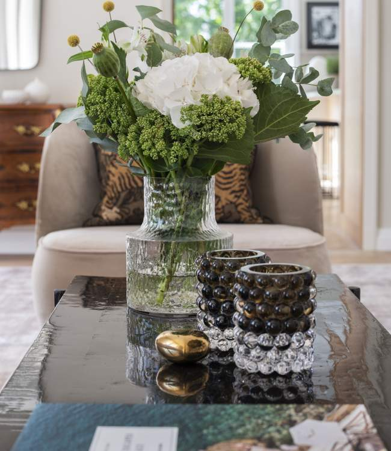

Portfolio Viggbyholm

Viggbyholm
Located in a beautiful neighborhood a short drive north of Stockholm, this home was a complete rebuild of the original house. The owner worked with architect Pontus Ekberg who redesigned the old house to include two "wings" flanking the original main building.
The interior was gutted and the layout was redesigned for a large master suite as well as two bedrooms with baths en suite on the top floor, all with beautiful views overlooking the water across the street. The main floor has a generous living room with three pairs of french doors opening out to the terrace, a custom made kitchen open to a dining space as well as an inviting den/tv room. The bottom floor houses a spacious gym, a large movie screening room, guest suite and wine room for the family´s grand collection.
The interior design is mainly neutral colors with few selected color infusions, but mainly focused on varying textures and materials. A light wood parquet floor throughout and wooden cabinetry in the kitchen adds to the neutral scheme and a natural wool wall to wall carpet in the second floor master suite enforces the quiet and calmness of the neutral palette.